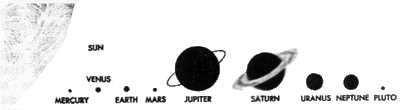

Cretinism or Evilution? No. 2
Edited by E.T. Babinski
The "Center of God's Interest"

|
Previous |
Contents |
Next |
It is easy to see why "creation scientists" do not seek out or publicize information concerning "other planets." To them, "The earth is the center of God's interest in the universe, with the sun, moon, and stars merely providing various essential services for the earth and its inhabitants." [Henry Morris, The Biblical Basis for Modern Science (Grand Rapids: Baker Book House, 1984), p. 162]
Thus, Morris, though not a believer in the earth's physical centrality, nevertheless is bound to admit that the Biblical creation account teaches the earth's "centrality" in other respects. Morris admits that Genesis, chapter one, depicts the earth being created before the sun, moon, and stars. In fact even the vegetation and "fruit trees" on earth were created before the sun! So, the millions of galaxies, including the sun, planets and many moons of our solar system must have remained uncreated until God had fashioned some orange, banana, and coconut trees on earth! Morris can accept that sort of "centrally important" message, but not accept the passages in Scripture that depict the physical "centrality" of the earth?
Morris can believe that our planet was created first out of all the cosmos and that the rest of the cosmos was created in "one day" as measured on "earth." Morris can believe that our planet twiddled its continents waiting for "the great lamp," the sun, to be created, which would then grab the earth with its superior gravitation, and swing our planet helplessly round its fat fiery waist as it "ruled the day and lit the earth;" he believes that our planet waited for "the lesser lamp," the moon, to be created "to rule the night and for signs and seasons on earth; "and waited for billions of gargantuan balls of flame, many larger than our sun, to be created, whose light extends in all directions to the farthest reaches of the universe, and which do not merely "provide" such "service" to the "earth and its inhabitants?" Yes, that's what Morris believes.
Genesis, 1:16-17, says that the "sun, moon, and stars also" were created "to light the earth."
Only two galaxies other than the one we live in, can be seen with the unaided eye. Without a telescope those two "nearby" galaxies appear as faint dots in the sky, while over a billion more galaxies are out there, unseen. If you raise your fist to the sky at arm's length in almost any direction, your fist is covering the area in the sky where about a million galaxies exist in the depths of space and time. And each of those galaxies consists of about a billion stars. If Morris' view is correct then the "various essential services" that all those stars provide the earth must be stupendous indeed! How very "needy" the earth must be! Yet only professional astronomers and owners of high-powered telescopes ever get to see any of the "light" emanating from the many galaxies that exist "out there." And even the most diligent astronomer with the most powerful telescope only gets to see an infinitesimal portion of it during his lifetime. Thus, "the stars" could not possibly have been created "to light the earth" as Genesis says, or, to "provide various essential services for the earth and its inhabitants" as Morris says.
God's cosmic "interest" appears far more "spread out" than the Biblical account of creation suggests. Exactly why should God have busied Himself "specially creating" rings of matter around stars other than our Sun, or created planets circling stars other than our Sun? Why indeed? What "essential service" do they "provide the earth and its inhabitants?"
What "essential service" is being provided by the most distant planet in our solar system, Pluto, a planet that wasn't even detected until this century? Are there some "essential services" being provided by the eight massive objects (each about 100250 km in diameter) recently detected circling our sun in orbits beyond Neptune and Pluto? How many other bodies besides these move in secret, never "lighting" the earth, nor "providing various essential services to the earth and its inhabitants"? According to astronomers, most of the matter in the universe doesn't shine at all.
Surely, Morris must realize that long before him, Christians have struggled with questions of "How and Why God created objects that did not circle the earth and did not provide various essential services to the earth and its inhabitants." Though Morris displays little knowledge of such historic precedents.
For instance, in Galileo's day, the discovery of Jupiter's moons raised a ruckus amongst Biblical theologians. If Jupiter had but a single moon circling round her, that would mean that God had specially created a "lesser lamp" to "rule" Jupiter's night. Indeed, why would Jupiter be created with not one, but many "lamps" to light itself and to rule its night? Why would God in his "infinite wisdom" give such "preferential treatment" (i.e., not just one but "many lamps") to a planet that didn't even have any inhabitants?
Needless to say, the very idea of inhabitants like man being found elsewhere in the universe was deemed blasphemous, for the Bible says that God spent three out of six days specially creating all the life on earth, rather than creating life elsewhere in the cosmos, and, the Bible says that Eve was the mother of "all" living beings "created in God's image," so there couldn't be any more beings created in God's image existing on other planets.
Hence, theologians denounced the sight of "many moons" around Jupiter even though Galileo's telescope clearly showed they existed. Such objects were mere "illusions of the devil," created to "lead astray, if possible, even the elect."
|
 The relative sizes of the planets in relation to a portion of the Sun. |
On another note, consider this. Mercury, Venus, Mars, Jupiter and Saturn, were regarded by the ancients as "wandering stars" because, with the unaided eye, those bodies resembled starry bright objects, but did not move in a predictable nightly circle like all the other stars. These "wanderers" (from which we get the word "planet") each moved in it's own peculiar path across the sky. Like regular stars, "wandering stars" were believed to emit their own light, not merely reflected light from the sun. Even the moon was regarded . as emitting its own light, since Genesis, chapter one, calls the sun and moon both literally, "lamps." (Calvin in his Commentary on Genesis, agreed that the moon shone with some light reflected from the sun, but he also stubbornly asserted that the moon "must...be a fiery body...it is also luminous.") The telescope, however, suggested that the moon and the planets might be more like the earth, large massive bodies, and not necessarily "fiery" ones.
But, "If the earth is a planet, and only one of several planets, it can not be that any great things have been done specially for it as the Christian doctrine teaches. If there are other planets, since God makes nothing in vain, they must be inhabited; but how can their inhabitants be descended from Adam? How can they trace their origin to Noah's ark? How can they have been redeemed by the Savior?"
I'll allow readers to sort out such thoughts amongst themselves.
E. T. BABINSKI
|
Previous |
Contents |
Next |